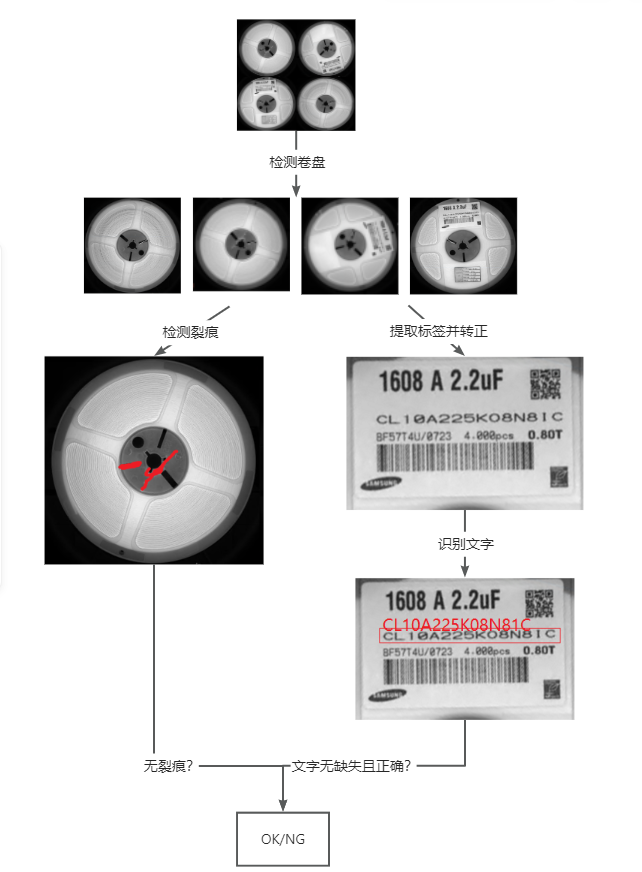

关于 VisionFlow#
VisionFlow 是什么#
在工业检测场景中，对于一个产品、零件或模组的质量检测，往往包含多个检测项，多个检测项之前又可能存在相互的依赖关系， 后续的检测步骤的正确执行依赖于前面的检测步骤给出正确的结果，例如下图所示的检测流程：
当检测流程中使用到AI工具时，为了保证效果，检测流程中、后面的AI工具可能需要基于前面步骤的工具的检测结果来进行训练。 为了能够构建这样的检测流程并能取得良好的检测效果，我们需要：
将不同的算法工具根据我们的算法方案组织成一个完整的检测流程；
为了训练和评估各个工具的效果，我们需要维护与这个流程相对应的数据集；
为检测流程中用到的每个工具的不同步骤设置合理的参数；以及训练效果优秀的模型；
需要让整个流程能够按照预定义的检测流程及参数配置，方便且高效的执行起来，部署到生产环境中发挥作用。
为了解决这些问题，我们开发了VisionFlow。VisionFlow包含以下核心功能：
提供了一些常用的算法工具，包括缺陷分割、检测、字符识别、装配检查等，后续也会逐步加入更多算法工具以支持不同的需求；
提供了一套构建和维护检测流程的方案，用户可以将不同的工具通过不同的组合和连接组织成不同的检测流程；
提供了数据集和参数的管理工具和访问接口，VisionFlow会根据你所建立的检测流程自动维护相应的数据集和参数；用户只需 根据自己的场景和检测要求设置对应的数据和参数即可，无需关心数据的存储、组织等问题；
提供了执行检测流程的执行器，VisionFlow会自动根据用户定义的检测流程加载设置参数和训练的模型，方便的创建出对应该检测流程 的执行器。
总结而言，VisionFlow是一个集常用算法工具、检测流程构建、检测参数及数据集管理、检测流程执行为一体的开发套件库。
为什么使用 VisionFlow#
使用VisionFlow，你可以：
使用我们提供的各种算法工具；
仅需数行代码即可构建完整的检测流程；
降低维护不同工具所需的数据集和参数的难度，所有数据都可以直接通过VisionFlow提供的统一的接口访问；无需考虑如何 组织和存储各种不同的数据的问题；降低训练模型的难度；
通过VisionFlow提供的简洁的运行接口方便且高效的执行整个检测流程，无需关心不同工具的参数和模型以及它们之间的关联， 简化模型部署的难度。
所有数据都可以通过接口访问，并提供几何计算库帮助帮助进行简单的几何计算，使用更灵活方便。